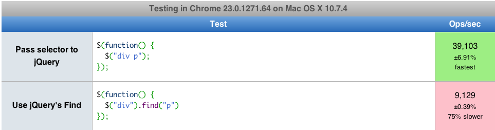

Jack Franklin
Developer at Kainos.com
Blogger at javascriptplayground.com
Tweeter at @Jack_Franklin
Is going to be about optimising your front-end JavaScript.
A lot of the examples will be jQuery based, because this is where I see the most mistakes.
It might seem like in places I have a go at jQuery, but that's not the case.
var div = $("div");Selecting by IDs (getElementById) and tags (getElementsByTagName)
We're not going to talk about. You all do it...right?
In this presentation, I mean the latest build of Chrome, pretty much.
In a modern browser, which is quicker?
1$("div p");$("div").find("p");Number One
Because of querySelector and querySelectorAll.
document.querySelector = false;
document.querySelectorAll = false;paras = $("p");
paras.each(function(index, item) {
console.log(index, "and item", item);
});
var len = paras.length;
for (var i = 0; i < len; i++) {
console.log(i, "and item", paras[i]);
}
var i = paras.length;
while (i--) {
console.log(i, "and item", paras[i]);
}
FF Nightly reported while(i--) quickest.
$("p").attr("id");
$("p")[0].id;
$("p").get(0).id;
document.getElementsByTagName("p")[0].id
If you're working with a jQuery set, avoid attr if you can.
If you can avoid jQuery, do it.
var i = 0;
var newUl = $("<ul />").appendTo("body");
while( i < 100 ) {
$("<li />", {
"text" : i+1
}).appendTo(newUl);
i++;
}
var i = 0;
var newUl = $("<ul />");
while( i < 100 ) {
$("<li />", {
"text" : i+1
}).appendTo(newUl);
i++;
}
newUl.appendTo("body");
var i = 0;
var newUl = "<ul>";
while( i < 100 ) {
newUl += '<li>' + (i++) + '</li>';
}
newUl += '</ul>';
$('body').append(newUl);
var newSpan = $("", {
text: "Hello",
id: "hey"
});
$("#test").append(newSpan);
var newSpan = $(document.createElement("span"), {
text: "Hello",
id: "hey"
});
$("#test").append(newSpan);
Use for..in for Objects, for for Arrays
Cache lengths in loops.
DOM Manipulation to a minimum.
Change classes, not styles.
JSPerf is great for trying things out.
@Jack_Franklin
(PS: you should totally pre-order my book.)